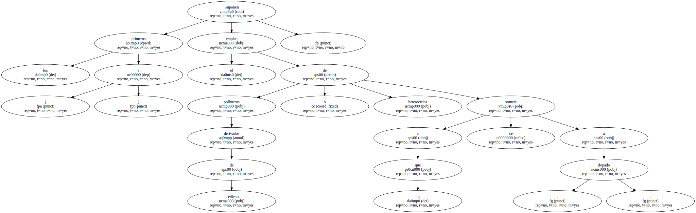
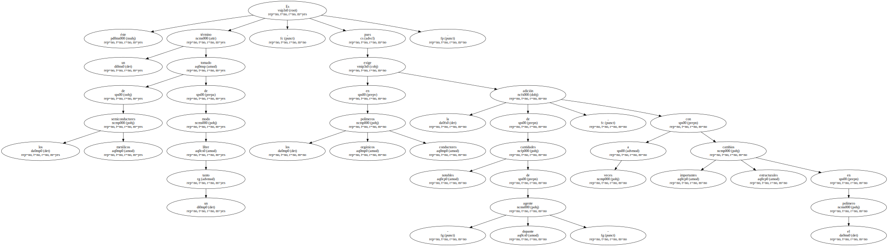
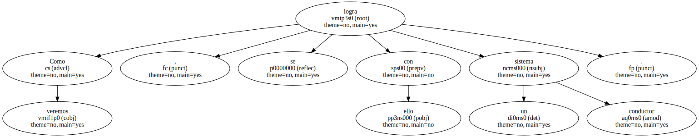
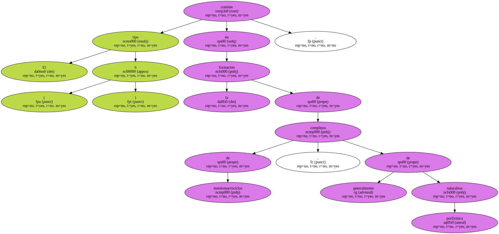
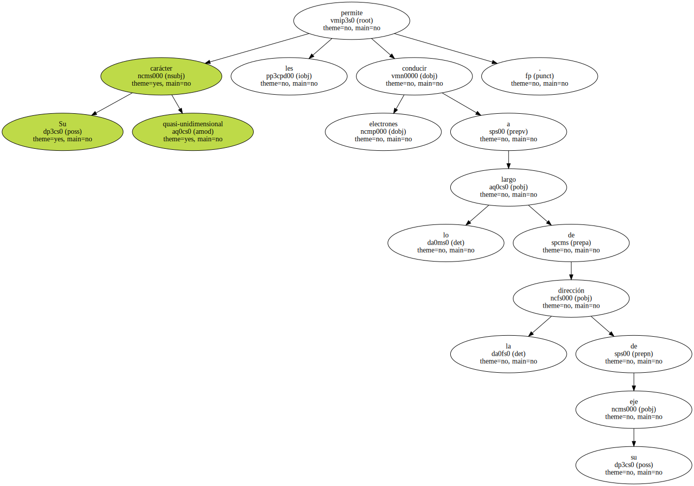
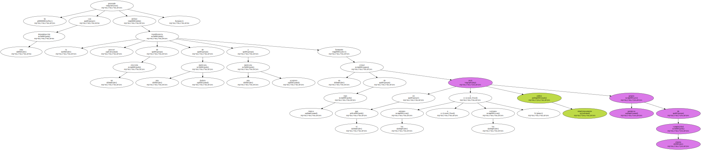
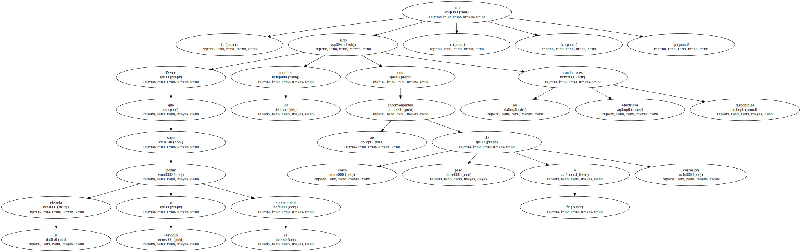
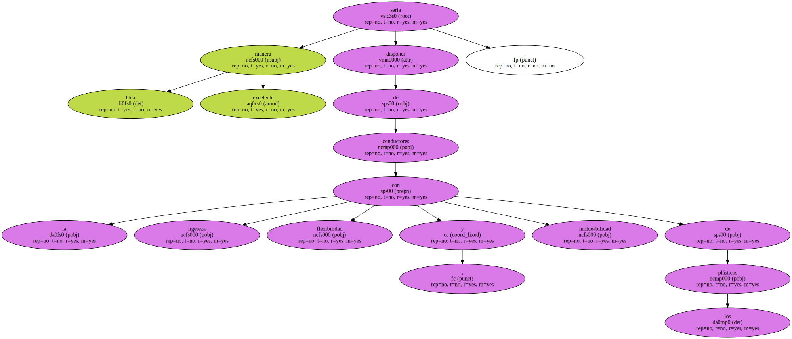
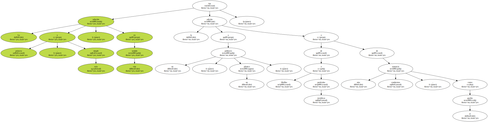

Suponen los primeros ( a ) el empleo de polímeros derivados de acetileno o heterociclos a los que se somete a - dopado -.
Es éste un término tomado de los semiconductores metálicos de modo un tanto libre , pues en los polímeros orgánicos conductores exige la adición de cantidades notables de - agente dopante - , a veces con importantes cambios estructurales en el polímero.
Como veremos , se logra con ello un sistema conductor.
El tipo ( b ) consiste en la formación de complejos de metalomacrociclos , generalmente de naturaleza porfirínica.
Su carácter quasi-unidimensional les permite conducir electrones a lo largo de la dirección de su eje.
El tercer tipo ( c ) de materiales orgánicos conductores , en los que se encuadra la labor investigadora de los autores , son los llamados complejos de transferencia de carga o , abreviadamente , C.

Se pretende con esta denominación definir la transferencia parcial de un electrón de una molécula dadora a una molécula aceptora formando un cristal de tipo iónico en el que los aniones o los cationes , o ambos simultáneamente sean grupos químicos de alguna complejidad.
Desde que la ciencia supo poner a servicio la electricidad , los metales han sido , con sus inconvenientes de coste , peso o corrosión , los conductores eléctricos disponibles.
Una excelente manera sería disponer de conductores con la ligereza , flexibilidad y moldeabilidad de los plásticos.
La primera , y más simple , solución en este sentido fue la adición a un polímero , un plástico , de fibrillas o partículas metálicas o de otra sustancia conductora , como el grafito.
Pero junto a estos conductores de matriz polimérica , llamados extrínsecos ( - composites - o materiales compuestos ) por ser una segunda sustancia la que proporciona la conductividad , se está consiguiendo desde hace unos años un tipo mucho más interesante : los conductores poliméricos intrínsecos , en los que es el propio polímero el responsable de la conductividad.